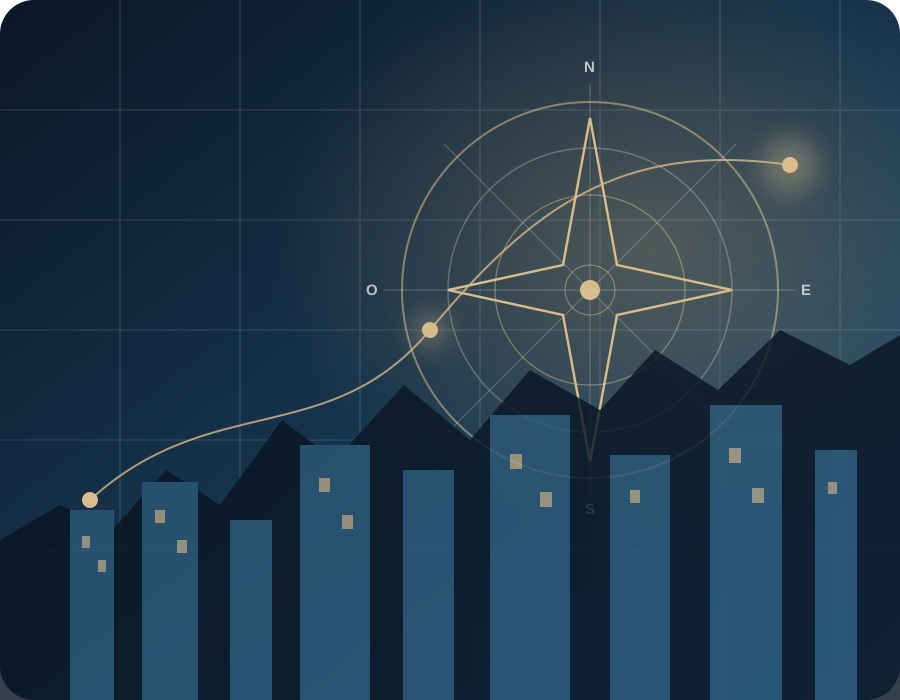

Comprensiónjurídica
DERECHO · EMPRESA · TECNOLOGÍA
Dirección jurídica para empresas que avanzan.
Ayudamos a gerencias, socios y equipos a convertir decisiones jurídicas complejas en estructuras, documentos, responsables y rutas de implementación que puedan administrarse.
Alcance verificableSupervisión profesionalEntregables ejecutivosSeguimiento trazable

El trabajo jurídico debe ayudar a decidir y también poder ejecutarse.Contexto · riesgo · evidencia · implementación
Criterioempresarial
Conocimientosectorial
Tecnologíaaplicada
Implementacióny acompañamiento
Meridiano es especialmente útil cuando la decisión jurídica está conectada con crecimiento, inversión, operación o regulación.No es necesario conocer previamente el servicio correcto: el punto de entrada puede definirse desde la necesidad.
LA FIRMA
Una práctica jurídica construida alrededor de decisiones empresariales complejas.
Meridiano Legal conecta criterio profesional, estructura empresarial, conocimiento sectorial y herramientas de seguimiento para que el trabajo jurídico no termine en una respuesta aislada.
Antes de proponer un contrato, un trámite o una política, calificamos la relación, el régimen aplicable, los actores, la evidencia y el resultado esperado. Cada intervención define alcance, entregables, responsabilidades, límites y condiciones de cierre.
CÓMO ELEGIR
Cuatro formas de empezar, según la decisión y el nivel de acompañamiento.
La modalidad adecuada no depende solo del tema jurídico. También depende de la urgencia, la evidencia disponible, el resultado esperado y si la necesidad es puntual, de proyecto o recurrente.
Una pregunta concreta
Para delimitar el problema, identificar riesgos iniciales y decidir el siguiente paso.
- Útil cuando
- La decisión es focal.
- Resultado
- Criterio y ruta inmediata.
- Horizonte
- Sesión o alcance breve.
Un asunto complejo o a la medida
Para análisis, negociación, estructuración o implementación que no puede reducirse a un paquete estándar.
- Útil cuando
- Existen varios actores o riesgos.
- Resultado
- Intervención profesional definida.
- Horizonte
- Según asunto e hitos.
Un resultado delimitado
Para necesidades recurrentes que pueden resolverse con metodología, entregables y exclusiones predefinidas.
- Útil cuando
- El resultado puede cerrarse.
- Resultado
- Paquete verificable.
- Horizonte
- 2 a 12 semanas.
Capacidad jurídica continua
Para empresas que necesitan memoria, priorización, atención periódica y control de obligaciones.
- Útil cuando
- La demanda es recurrente.
- Resultado
- Gobierno y seguimiento.
- Horizonte
- Mensual o trimestral.
PUNTO DE ENTRADA POR NECESIDAD
¿Qué necesita estructurar?
Seleccione la decisión que más se aproxima a su situación. La ficha sugerida permite revisar alcance, entregables y límites antes de contactar.
CAPACIDADES DIFERENCIADORAS
Tres frentes donde el derecho necesita comprender sistemas, activos y operación.
Gobernanza de tecnología e IA
Inventario de casos, datos, contratos, proveedores, impacto, supervisión y evidencia.
Proyectos regulados
Actividad, territorio, autoridades, permisos, actores, contratos y secuencia de ejecución.
Transformación jurídica
Catálogo de servicios, triage, documentos, indicadores, expedientes y automatización.
PRODUCTOS DE ALCANCE CERRADO
Resultados definidos, metodología y límites explícitos.
Cada producto parte de una pregunta ejecutiva y termina en entregables verificables. Las fichas indican duración orientativa, exclusiones y relación con el servicio profesional correspondiente.
Diagnóstico Jurídico Empresarial
Priorizar la exposición jurídica y convertirla en un plan de 90 días.
Empresa Jurídicamente Organizada
Ordenar gobierno, atribuciones, contratos, obligaciones y documentación esencial.
Marca, Software y Activos Intangibles Protegidos
Asegurar titularidad, protección y reglas de explotación de activos críticos.
Empresa Lista para Inversión
Preparar gobierno, capital, contratos, intangibles, contingencias y data room.
Programa de Gobernanza de IA
Inventariar casos, clasificar riesgos y definir roles, controles e incidentes.
Proyecto Regulado Estructurado
Definir viabilidad, permisos, actores, contratos y condiciones de avance.
Sistema Contractual Empresarial
Pasar de contratos aislados a aprobación, playbooks, obligaciones y renovaciones.
Programa de Protección de Datos y Consumidor
Convertir políticas en procesos, responsables, evidencias y respuestas consistentes.
MODALIDADES DE TRABAJO
El nivel de intervención debe corresponder a la decisión.
La modalidad final se define después de comprender hechos, urgencia, evidencia, actores, especialidades y resultado esperado.
Orientación focal
- Mejor para
- Pregunta concreta
- Duración
- Sesión o alcance breve
- Resultado
- Criterio y siguiente paso
Diagnóstico
- Mejor para
- Varios frentes conectados
- Duración
- 2 a 4 semanas
- Resultado
- Mapa y prioridades
Proyecto jurídico
- Mejor para
- Resultado definido
- Duración
- 4 a 12 semanas
- Resultado
- Entregables e implementación
Dirección externa
- Mejor para
- Necesidad recurrente
- Duración
- Cadencia mensual
- Resultado
- Gobierno y memoria
PLANES RECURRENTES
Continuidad, memoria institucional y capacidad de respuesta.
Los planes definen volumen, canales, niveles de servicio, gobernanza, exclusiones y mecanismos de escalamiento. No implican disponibilidad ilimitada.
Dirección Jurídica Externa
Comité, agenda de decisiones, atención preventiva, riesgos e informe ejecutivo.
Gobierno jurídico continuoGestión Contractual Continua
Solicitudes, negociaciones, aprobaciones, obligaciones, renovaciones y métricas.
Operación contractual administrableSecretaría Societaria
Órganos, actas, libros, poderes, decisiones y calendario corporativo.
Memoria y formalización societariaGestión Jurídica Regulatoria
Permisos, autoridades, obligaciones, cambios y condicionantes del proyecto.
Seguimiento de viabilidad y cumplimientoBanco Documental y Legal Operations
Plantillas, versiones, permisos, flujos, indicadores y ciclos de actualización.
Gobierno documental y mejora continuaQUÉ RECIBE LA EMPRESA
Entregables que conectan criterio, decisión y seguimiento.
El entregable depende del alcance. Meridiano prioriza formatos que puedan comprenderse, aprobarse, administrarse y actualizarse dentro de la empresa.
Concepto o informe ejecutivo
Pregunta, hechos, supuestos, régimen, análisis, riesgos, conclusión y condiciones.
Para decidir con fundamentoMapa de riesgos
Hallazgo, impacto, urgencia, control, responsable, tratamiento y riesgo residual.
Para ordenar recursos y tiemposHoja de ruta
Hitos, dependencias, responsables, evidencia, fechas y criterios de cierre.
Para convertir análisis en acciónInstrumento contractual
Acuerdo operativo, riesgos, cambios, responsabilidad, terminación y anexos.
Para administrar la relaciónMatriz de obligaciones
Fuente, obligación, frecuencia, responsable, evidencia, preaviso y estado.
Para no depender de memoriaTablero ejecutivo
Solicitudes, decisiones, riesgos, obligaciones, vencimientos y progreso.
Para sostener continuidadDOCUMENTOS GUIADOS
Captura estructurada y revisión proporcional al riesgo.
Los documentos guiados atienden necesidades delimitadas. No sustituyen un proyecto jurídico cuando existen negociación, contingencias, regulación especial, activos críticos o estructuras complejas.
Explorar documentos en Meridiano EmpresasAcuerdo de confidencialidadInformación, finalidad, acceso, excepciones, custodia y devolución.
Contrato de prestación de serviciosCalificación de la relación, alcance, precio, obligaciones y terminación.
Acta de órgano socialCompetencia, convocatoria, quórum, decisión, facultades y ejecución.
Contrato de suministroCalidad, entrega, inventario, garantías, continuidad y obligaciones.
Cesión o licencia de softwareTitularidad, componentes, alcance, territorio, soporte y datos.
Autorización y aviso de datosFinalidades, derechos, canales, responsables y transferencia.
EXPERIENCIA SECTORIAL
El derecho debe conversar con la operación y el modelo de negocio.
La experiencia sectorial mejora las preguntas y la identificación de dependencias. Cada asunto exige validar específicamente el régimen, los hechos, la fecha y la evidencia.
Desarrollo, licencias, datos, proveedores, activos y gobernanza.
Modelos, actores, habilitaciones, contratos, tarifas y obligaciones.
Aprovechamiento, proyectos territoriales, regulación y arquitectura contractual.
Producción, comercialización, alianzas, activos y regulación sectorial.
Prestadores, alianzas, experiencia del usuario, datos y riesgo regulatorio.
Actores, convenios, competencias, cronogramas y cumplimiento.
Canales, consumidor, garantías, marca, metas, territorio y terminación.
Fundadores, capital, gobierno, activos, contratos y preparación para inversión.
CUÁNDO TIENE SENTIDO
La mejor relación profesional empieza por una necesidad calificable.
Meridiano agrega más valor cuando existe una decisión, un resultado o una capacidad que debe construirse. Cuando la necesidad no corresponde al alcance, debe indicarse antes de contratar.
RUTA MERIDIANO
Del problema abierto a una decisión sustentada y ejecutable.
La ruta separa comprensión, calificación, alcance, implementación y seguimiento para evitar documentos prematuros o soluciones desconectadas de la operación.

EXPERIENCIA DEMOSTRATIVA
Explore la propuesta antes de presentar información confidencial.
El centro de demostración permite recorrer la oferta, revisar entregables ficticios, analizar un caso integral, simular una hipótesis de alcance y entrar a Meridiano Empresas.
Los escenarios, cifras, perfiles y resultados de la demostración son ficticios.PERSPECTIVAS
Ideas para dirigir el riesgo antes de que se convierta en fricción.
Contenido general y educativo. Las conclusiones aplicables dependen de hechos, documentos, jurisdicción y fecha.
Usar inteligencia artificial no es solo contratar una herramienta.
Inventario de casos, datos, impacto sobre personas, supervisión, contrato, incidentes y trazabilidad.
Un contrato debe poder administrarse después de la firma.
La negociación debe terminar en obligaciones, responsables, evidencia, cambios, preavisos y alternativas de salida.
La viabilidad jurídica depende de una secuencia, no de una lista de permisos.
Actividad, territorio, autoridades, actores, contratos, condiciones precedentes y cronograma técnico.
PREGUNTAS FRECUENTES
Claridades antes de iniciar.
Estas respuestas explican el proceso general. El alcance profesional solo se define después de comprender la necesidad y realizar las verificaciones correspondientes.
¿Debo saber qué servicio necesito?
No. Puede presentar la decisión, el problema o el resultado esperado. Meridiano determina si corresponde una orientación, un diagnóstico, un proyecto, un producto cerrado, un plan recurrente o la remisión a otra especialidad.
¿La primera conversación ya constituye asesoría jurídica?
No necesariamente. La primera conversación busca comprender contexto, urgencia, actores, disponibilidad y posibles conflictos. La relación profesional comienza con aceptación expresa del alcance, honorarios y condiciones aplicables.
¿Cómo se define el precio?
Se consideran el resultado, la complejidad, el volumen de información, las especialidades, la urgencia, las revisiones, los actores, la implementación y el nivel de seguimiento. Los productos cerrados permiten una estimación más estandarizada.
¿Meridiano garantiza permisos, registros, financiación o resultados frente a terceros?
No. Las decisiones de autoridades, registros, contrapartes, jueces, inversionistas y terceros no dependen exclusivamente del trabajo profesional. El alcance debe indicar expresamente estos límites.
¿Puedo enviar documentos confidenciales desde esta página?
No. La web pública y la demostración son estáticas. La información confidencial y los archivos solo deben compartirse después de validar identidad, conflicto, alcance y canal seguro.
¿Meridiano puede trabajar con el abogado interno o con otros especialistas?
Sí. El modelo puede complementar equipos internos y coordinar especialistas técnicos, tributarios, financieros, judiciales o sectoriales cuando el asunto lo requiera, delimitando responsabilidades.
CONTACTO
Presente la necesidad. La información confidencial se solicita después de validar contexto y canal.
La primera conversación busca comprender la decisión, la urgencia, los actores y la disponibilidad. La relación profesional solo comienza con aceptación expresa del alcance y las verificaciones aplicables.